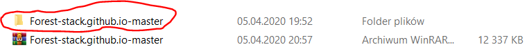
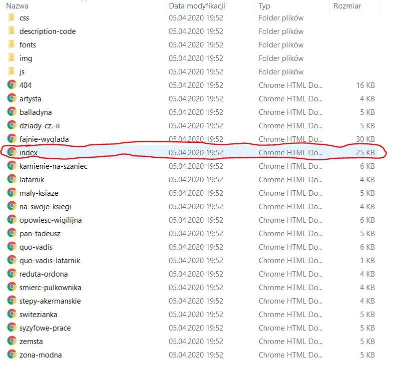

Również możesz podejrzeć pliki online kliknij tutaj aby podejrzeć
Pobierz stronęRozpakuj plik który został pobrany.
jak rozpakować plik za pomocą WinRarjak rozpakować plik za pomocą zip
Kliknij 2 razy na folder który został rozpakowany.

kliknij 2 razy na plik index.html

Tutaj znajdują się wszystkie informacje o źródłach z których korzystaliśmy.